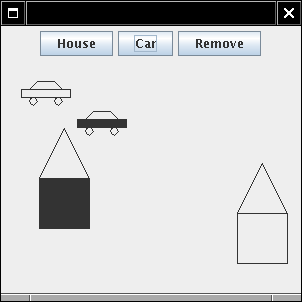
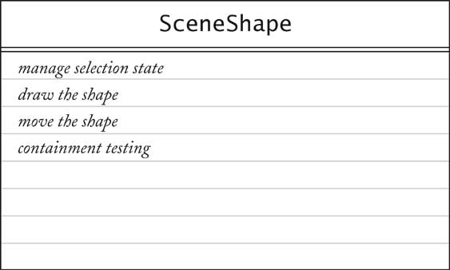

Object-Oriented Design & Patterns
Cay S. Horstmann
Chapitre 6
Héritage et classes abstraites

Matière du chapitre
- Le concept d'héritage
- Programmation graphique avec l'héritage
- Classes abstraites
- Le patron TEMPLATE METHOD
- Interfaces protégées
- La hiérarchie des composants Swing
- La hiérarchie des formes géométriques standards
- La hiérarchie des classes d'exception
- Quand ne pas utiliser l'héritage
Représenter la spécialisation
- Commencer avec la simple classe Employee
public class Employee
{
public Employee(String aName) { name = aName; }
public void setSalary(double aSalary) { salary = aSalary; }
public String getName() { return name; }
public double getSalary() { return salary; }
private String name;
private double salary;
}
- Manager est une sous classe
Représenter la spécialisation
- La classe Manager ajoute une nouvelle méthode : setBonus
- La classe Manager redéfinit une méthode existante : getSalary
- Ajoute le salaire et le bonus
- public class Manager extends Employee
{
public Manager(String aName) { ... }
public void setBonus(double aBonus) { bonus = aBonus; } //
new method
public double getSalary() { ... } // overrides Employee
method
private double bonus; // new field
}
Représenter la spécialisation

Méthodes et attributs de Manager
- méthodes setSalary, getname (héritées d'Employee)
- méthodes getSalary (redéfinie dans Manager)
- méthode setBonus (définie dans Manager)
- attributs name et salary (définis dans Employee)
- attribut bonus (défini dans Manager)
La terminologie Super/Sous
- Pourquoi Manager est une sous classe?
- Le Manager est supérieur, n'est-ce pas?
- L'objet Manager a plus d'attributs, n'est-ce pas?
- L'ensemble des managers est un sous ensemble de l'ensemble des
employés
La terminologie Super/Sous

Hiérarchies d'héritage
- Monde réel : Les hiérarchies décrivent des relations générale/spécifique
- Le concept général est la racine de l'arbre
- Les concepts plus spécifiques sont les enfants
- En programmation: hiérarchie d'héritage
- La superclasse générale est la racine de l'arbre
- Les sous classes plus spécifiques sont les enfants
Hiérarchies d'héritage

Principe de substitution
- Formulé par Barbara Liskov
- On peut utiliser une sous classe partout où une superclasse est attendue
- Exemple:
Employee e;
...
System.out.println("salary=" + e.getSalary());
- On peut établir e comme une référence à un Manager
- Polymorphisme : La bonne méthode getSalary est invoquée
Invoquer les méthodes d'une superclasse
- On ne peut pas accéder aux attributs privés d'une superclasse
public class Manager extends Employee
{
public double getSalary()
{
return salary + bonus; //
ERROR--private field
}
...
}
- Soyez prudent lorsque vous appelez une méthode d'une superclasse
public double getSalary()
{
return getSalary() + bonus; //
ERROR--recursive call
}
Invoquer les méthodes d'une superclasse
- Utiliser le mot réservé super
public double getSalary()
{
return super.getSalary() +
bonus;
}
- super n'est pas une référence
- super empêche l'appel polymorphique
Invoquer le construction d'une superclasse
- Utiliser le mot réservé super dans le constructeur de la
sous classe :
public Manager(String aName)
{
super(aName); // calls superclass constructor
bonus = 0;
}
- L'appel à super doit être la première instruction dans le
constructeur de la sous classe
- Si le constructeur de la sous classe n'appelle pas super, la
superclasse doit avoir un constructeur sans paramètre
Pré-conditions
- Une pré-condition d'une méthode redéfinie est aussi forte ou plus
faible
public class Employee
{
/**
Sets the employee salary to a given value.
@param aSalary the new salary
@precondition aSalary > 0
*/
public void setSalary(double aSalary) { ... }
}
- Peut-on redéfinir Manager.setSalary avec une pré-condition
salary > 100000?
- Non -- Elle pourrait être défaite :
Manager m = new Manager();
Employee e = m;
e.setSalary(50000);
Post-conditions, visibilité, exceptions
- La post-condition d'une méthode redéfinie est aussi forte ou plus forte
- Exemple: Employee.setSalary promet de ne pas diminuer le salaire
- Alors Then Manager.setSalary doit respecter la post-condition
- Une méthode redéfinie ne pas pas est plus private.
(Erreur commune : oublier public quand on redéfinie)
- Une méthode redéfinie ne peut pas lever plus d'exceptions
Programmation graphique avec l'héritage
- Chapitre 4: Créer des dessins en implémentant le type interface Icon
- Maintenant : Créer une sous classe de JComponent
public class MyComponent extends JComponent
{
public void paintComponent(Graphics g)
{
drawing instructions go here
}
...
}
- Avantage : Hériter des comportements de JComponent
- Exemple: On peut attacher un observateur de souris (« mouse listener ») à un JComponent
Observateurs de souris (« Mouse Listeners »)
Adaptateurs de souris « Mouse Adapters »
- Et si vous vouliez seulement capter mousePressed?
- Étendre MouseAdapter
public class MouseAdapter implements MouseListener
{
public void mouseClicked(MouseEvent event) {}
public void mousePressed(MouseEvent event) {}
public void mouseReleased(MouseEvent event) {}
public void mouseEntered(MouseEvent event) {}
public void mouseExited(MouseEvent event) {}
}
- Le constructeur du composant ajoute le « listener » :
addMouseListener(new
MouseAdapter()
{
public void mousePressed(MouseEvent event)
{
mouse action goes here
}
});
Programme déplaçant une voiture
Programme déplaçant une voiture

Rédacteur de scène
- Dessine des formes variées
- L'usager peut ajouter, supprimer et déplacer les formes
- L'usager sélectionne la forme avec la souris
- La forme sélectionnée est mise en surbrillance
Rédacteur de scène

Le type interface SceneShape
- Suivre l'état de la sélection
- Dessine une nouvelle forme ou la forme sélectionnée
- Déplace la forme
- Critère pour sélectionner : est-ce qu'un point (position
de souris) est dedans ?
Type interface SceneShape

Type interface SceneShape
public interface SceneShape
{
void setSelected(boolean b);
boolean isSelected();
void draw(Graphics2D g2);
void drawSelection(Graphics2D g2);
void translate(int dx, int dy);
boolean contains(Point2D aPoint);
}
Classes CarShape et HouseShape
public class CarShape implements SceneShape
{
...
public void setSelected(boolean b) { selected = b; }
public boolean isSelected() { return selected; }
private boolean selected;
}
public class HouseShape implements SceneShape
{
...
public void setSelected(boolean b) { selected = b; }
public boolean isSelected() { return selected; }
private boolean selected;
}
Classes abstraites
- Factorise les comportements communs
(setSelected, isSelected)
- Les sous classes héritent du comportement commun
- Quelques méthodes ne sont pas définies
(draw, drawSelection, translate, contains)
public class SelectableShape implements Item
{
public void setSelected(boolean b) { selected = b; }
public boolean isSelected() { return selected; }
private boolean selected;
}
Classes abstraites

Classes abstraites
Classes abstraites et type interface
- Les classes abstraites peuvent avoir des attributs
- Les types interface peuvent avoir seulement des constantes (public static final)
- Les classes abstraites peuvent définir des méthodes
- Les types interface peuvent seulement déclarer des méthodes
- Une classe implémente un nombre quelconque de types interface
- Dans Java, une classe peut étendre une seule autre classe
Rédacteur de scène
Technique de surbrillance uniforme
- Technique originale : chaque forme se dessine selon son état de
sélection
- Incommode
- Meilleure technique : déplacer, dessiner, déplacer, dessiner,
placer à la
position originale
- Définir dans SelectableShape
public void drawSelection(Graphics2D g2)
{
translate(1, 1);
draw(g2);
translate(1, 1);
draw(g2);
translate(-2, -2);
}
Technique de surbrillance uniforme

Méthode modèle
- drawSelection appelle draw
- On doit déclarer draw dans SelectableShape
- Pas d'implémentation à ce niveau !
- Déclarer comme une méthode abstraite
public abstract void draw(Graphics2D g2)
- Définie dans CarShape, HouseShape
- La méthode drawSelection appelle draw, translate
- drawSelection ne connaît pas quelles méthodes -- polymorphisme
- drawSelection est une méthode modèle (template method)
- Ch6/scene2/SelectableShape.java
- Ch6/scene2/HouseShape.java
Patron TEMPLATE METHOD
Contexte
- Un algorithme est applicable pour plusieurs types.
- L'algorithme peut être divisé en plusieurs opérations primitives.
Les opérations primitives peuvent être différentes pour chaque type
- L'ordre des opérations primitives ne dépend pas du type
Patron TEMPLATE METHOD
Solution
- Définir une superclasse qui a une méthode pour l'algorithme et des méthodes
abstraites pour les opérations primitives.
- Implémenter l'algorithme en appelant les opérations primitives dans
l'ordre approprié.
- Ne pas définir les opérations primitives dans la superclasse ou bien, les
définir pour avoir un comportement par défaut approprié.
- Chaque sous classe définit les opérations primitives mais pas l'algorithme.
Patron TEMPLATE METHOD
Patron TEMPLATE METHOD
| Nom dans le patron de
conception |
Vrai nom (Selectable shapes) |
AbstractClass
|
SelectableShape
|
ConcreteClass
|
CarShape,
HouseShape
|
templateMethod()
|
drawSelection
|
primitiveOp1(),
primitiveOp2()
|
translate,
draw
|
Formes composées
Formes composées

Accès aux éléments d'une superclasse
Accès protégé
- Faire de CompoundShape.add une méthode protégée
- Protège HouseShape : les autres classes ne peuvent pas ajouter
des graffitis
- Les éléments protégés peuvent être accédés par les méthodes
des sous classes...
- ...et par les méthodes situées dans le même paquetage
- Mauvaise idée de protéger les attributs
protected GeneralPath path; // DON'T
- Mais ça va pour les méthodes
protected void add(Shape s) // GOOD
- Interface protégée séparée de l'interface publique
Hiérarchie des composants de Swing
Hiérarchie des composants de Swing

Hiérarchie des composants de Swing
- Historique : AWT fut le premier, Abstract Window Toolkit
- Utilisait les composants natifs
- Il y avait des incohérences subtiles entre les plateformes
- Écrire une fois, exécuter partout ->
Écrire une fois, déverminer partout
- Swing dessine les composants sur des fenêtres blanches
- Supporte de multiple implémentations de l'aspect et la convivialité
(« look and feel »)
L'aspect et la convivialité (« look and feel »)

Hiérarchie des composants de Swing
- Base des composants Swing : JComponent
- Sous classe de Container
- Quelques composants Swing sont des containers
- Java n'a pas d'héritage multiple
- JLabel, JButton, ... sont des sous classes de JComponent
- Classes intermédiaires AbstractButton, JTextComponent
Hiérarchie des formes géométriques
Hiérarchie des formes géométriques

Formes rectangulaires
Classes Float/Double
Classes Float/Double

Classes Float/Double
public class Rectangle2D
{
public static class Float extends Rectangle2D
{
public double getX() { return x; }
public double getY() { return y; }
public double getWidth() { return width; }
public double getHeight() { return height;}
public void setRect(float x, float y, float w, float h)
{
this.x = x; this.y = y;
this.width = w; this.height = h;
}
public void setRect(double x, double y,
double w, double h)
{
this.x = (float)x; this.y = (float)y;
this.width = (float)w; this.height = (float)h;
}
...
public float x;
public float y;
public float width;
public float height;
}
. . .
Classes Float/Double
. . .
public static class Double extends Rectangle2D
public double getX() { return x; }
public double getY() { return y; }
public double getWidth() { return width; }
public double getHeight() { return height;}
public void setRect(double x, double y,
double w, double h)
{
this.x = x; this.y = y;
this.width = w; this.height = h;
}
...
public double x;
public double y;
public double width;
public double height;
}
...
}
Float/Double Classes
Le pattern TEMPLATE METHOD
Nom dans le patron de
conception
|
Vrai nom (Rectangles) |
AbstractClass
|
Rectangle
|
ConcreteClass
|
Rectangle2D.Double
|
templateMethod()
|
contains
|
primitiveOpn()
|
getX,
getY, getWidth, getHeight |
Hiérarchie des classes d'exception
- Base de la hiérarchie : Throwable
- Deux sous classes : Error, Exception
- Sous classes de Error : fatal
(mémoire saturée, échec d'assertion)
- Sous classes de Exception :
- Beaucoup d'exceptions vérifiées (« checked exceptions »)
(I/O, class not found)
- RuntimeException -- Ces sous classes ne sont pas vérifiées
(null pointer, index out of bounds)
Hiérarchie des classes d'exception

Traiter les exceptions
Définir des classes d'exception
Quand ne pas utiliser l'héritage
- Provenant d'un tutoriel pour un compilateur C++ :
public class Point
{
public Point(int anX, int aY) { ... }
public void translate(int dx, int dy) { ... }
private int x;
private int y;
}
public class Circle extends Point // DON'T
{
public Circle(Point center, int radius) { ... }
public void draw(Graphics g) { ... }
private int radius;
}
Quand ne pas utiliser l'héritage
- Hein ? Un cercle n'est pas un point!
- Par accident, la méthode héritée translate fonctionne
pour les cercles
- Le même tutoriel propose un Rectangle comme une sous classe de Point:
public class Rectangle extends Point // DON'T
{
public Rectangle(Point corner1, Point corner2) { ... }
public void draw(Graphics g) { ... }
public void translate(int dx, int dy) { ... }
private Point other;
}
Quand ne pas utiliser l'héritage
Quand ne pas utiliser l'héritage